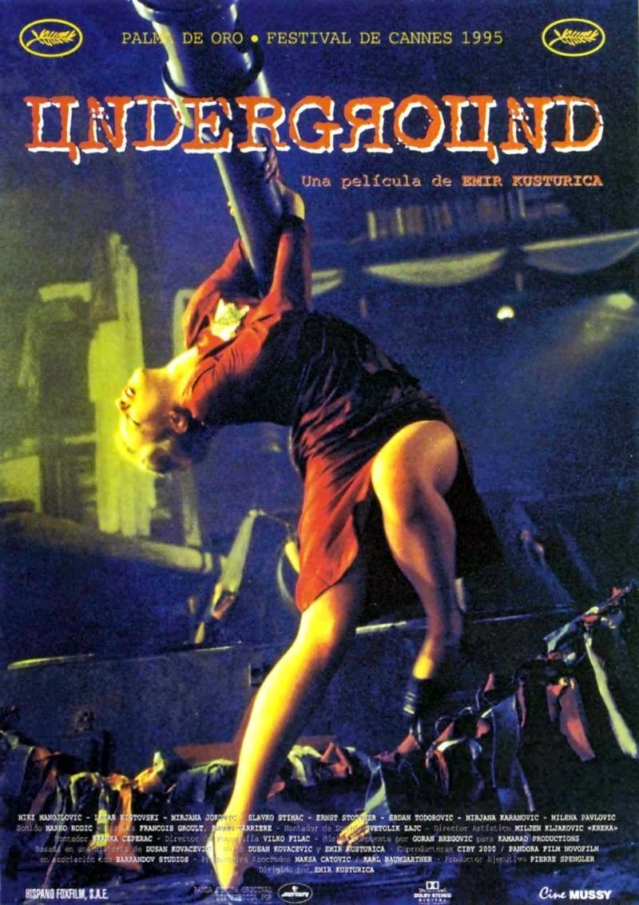

Thanks for rating us!
EDIT
|  | ||
Underground |
||
| 1995 | szerb | |
| Müfaj: | dráma, vígjáték | |
| Rendező: |  Emir Kusturica Emir Kusturica |
|
| Színészek |  Miki Manojlovic Miki Manojlovic Lazar Ristovski Lazar Ristovski Mirjana Jokovic Mirjana Jokovic |
|
| Pontszám | 4.2/5 500 szavazat |
|
"A soha véget nem érő háború abszurd és lehetetlen, de - mint tudjuk - a Balkán megvalósult meséje. Belgrád 1941-es német megszállását követően több partizáncsalád a pincékbe menekül. Egy "jóbarát" hadiszállító támogatásával fegyvereket készítenek az ellenállásnak - amin a halálgyáros jól keres. A háborúnak egyszer csak vége lesz, de a barát tovább szövi a szilaj harcok történetét, oly hihetően, hogy egész város éldegél immár a felszín alatt. Azonban 1961-ben néhány partizán felmegy a fényre. Meglepődésük leírhatatlan. Azután 1991-ben újra kitör a háború..." (Cinema)
Kritika helye itt...
Aránylag nem rossz, de azért nem jó...